전자기사 (2004-05-23 기출문제)
1과목: 전기자기학
1. 비유전률 4, 비투자율 4인 매질내에서의 전자파의 전파속도는 자유공간에서의 빛의 속도의 몇 배인가?
- 1/3
- 1/4
- 1/9
- 1/16
(정답률: 알수없음)

2. Maxwell의 전자기파 방정식이 아닌 것은?
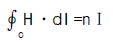
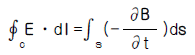
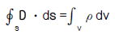
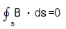
(정답률: 알수없음)
3. 면전하밀도가 ρs[C/m2]인 무한히 넓은 도체판에서 R[m] 만큼 떨어져 있는 점의 전계의 세기는 몇 V/m 인가?
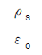
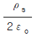
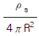
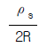
(정답률: 알수없음)
4. 전위함수 V=5x2y+z[V]일 때 점(2,-2,2)에서 체적전하밀도 ρ[C/m3]의 값은?
- 5εo
- 10εo
- 20εo
- 25εo
(정답률: 알수없음)
5. 쌍극자 모멘트가 M[C·m]인 전기쌍극자에 의한 임의의 점 P의 전계의 크기는 전기쌍극자의 중심에서 축방향과 점 P를 잇는 선분사이의 각이 얼마일 때 최대가 되는가?
- 0
- π/2
- π/3
- π/4
(정답률: 알수없음)
6. x > 0 인 영역에서 ε1 = 3 인 유전체, x < 0 인 영역에 ε2 = 5인 유전체가 있다. 유전률 ε2 인 영역에서 전계 E2 = 20ax + 30ay - 40az[V/m]일 때, 유전률 ε1인 영역에서의 전계 E1은 몇 V/m 인가?
- (100/3)ax+30ay-40az
- 20ax+90ay-40az
- 100ax+10ay-40az
- 60ax+30ay-40az
(정답률: 알수없음)
7. 8m 길이의 도선으로 만들어진 정방형 코일에 π[A]가 흐를 때 정방형의 중심점에서의 자계의 세기는 몇 A/m 인가?
- √2/2
- √2
- 2√2
- 4√2
(정답률: 알수없음)
8. 전기회로에서 도전도(Ω/m)에 대응하는 것은 자기회로에서 무엇인가?
- 자속
- 기자력
- 투자율
- 자기저항
(정답률: 알수없음)
9. N회 감긴 환상코일의 단면적이 S[m2]이고 평균 길이가 ℓ[m]이다. 이 코일의 권수를 반으로 줄이고 인덕턴스를 일정하게 하려고 할 때, 다음 중 옳은 것은?
- 단면적을 2배로 한다.
- 길이를 1/4배로 한다.
- 전류의 세기를 4배로 한다.
- 비투자율을 2배로 한다.
(정답률: 알수없음)
10. 강자성체의 히스테리시스 루프의 면적은?
- 강자성체의 단위 체적당의 필요한 에너지이다.
- 강자성체의 단위 면적당의 필요한 에너지이다.
- 강자성체의 단위 길이당의 필요한 에너지이다.
- 강자성체의 전체 체적의 필요한 에너지이다.
(정답률: 알수없음)
11. 환상철심에 권수 NA인 A코일과 권수 NB인 B코일이 있을 때, A코일의 자기인덕턴스가 LA[H]라면 두 코일의 상호인덕턴스는 몇 H 인가?
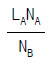
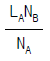
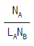
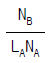
(정답률: 알수없음)
12. 반지름 a[m], 전하 Q[C]을 가진 두 개의 물방울이 합쳐서 한개의 물방울이 되었다. 합쳐진 후의 정전에너지를 합쳐지기 전과 비교하면 어떻게 되는가?
- 변화하지 않는다.
- 2배로 감소한다.
- 1/2로 감소한다.
- 증가한다.
(정답률: 알수없음)
13. 유전률 ε=10 이고 전계의 세기가 100V/m인 유전체 내부에 축적되는 에너지 밀도는 몇 Ｊ/m3인가?
- 2.5×104
- 5×104
- 4.5×109
- 9×109
(정답률: 알수없음)
14. 면적 A[m2], 간격 d[m]인 평행판콘덴서의 전극판에 비유전률 εr인 유전체를 가득히 채웠을 때 전극판간에 V[V]를 가하면 전극판을 떼어내는데 필요한 힘은 몇 N 인가?
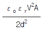
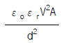
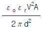
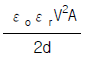
(정답률: 알수없음)
15. 자계 중에 이것과 직각으로 놓인 도선에 Ｉ[A]의 전류를 흘리니 F[N]의 힘이 작용하였다. 이 도선을 v[m/s]의 속도로 자계와 직각으로 운동시키면 기전력은 몇 V 인가?
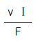
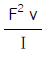
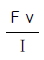
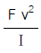
(정답률: 알수없음)
16. 10A의 전류가 흐르고 있는 도선이 자계내에서 운동하여 5Wb의 자속을 끊었다고 하면, 이 때 전자력이 한 일은 몇 Ｊ인가?
- 25
- 50
- 75
- 100
(정답률: 알수없음)
17. 면적 100cm2 인 두장의 금속판을 0.5cm 인 일정 간격으로 평행 배치한 후 양판간에 1000V의 전위를 인가하였을 때 단위면적당 작용하는 흡인력은 몇 N/m2 인가?
- 1.77×10-1
- 1.77×10-2
- 3.54×10-1
- 3.54×10-2
(정답률: 알수없음)
18. 내도체의 반지름이 a[m]이고, 외도체의 내반지름이 b[m], 외반지름이 c[m]인 동축케이블의 단위길이당 자기인덕턴스는 몇 H/m 인가?
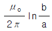
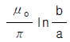
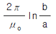
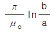
(정답률: 알수없음)
19. 영역 1의 자유공간에서 전파 E0i[V/m]와 자파 H0i[A/m]가 비유전율 εr=3을 가진 유전체 영역으로 수직하게 입사 될 때 계면에서의 값으로 옳은 것은?
- 반사 전파의 크기는 -0.268E0i 이다.
- 투과 전파의 크기는 0.732E0i 이다.
- 반사 자파의 크기는 1.268H0i 이다.
- 투과 자파의 크기는 1.268H0i 이다.
(정답률: 알수없음)
20. 무한장 직선도선에 흐르는 직류전류 Ｉ에 의해, 무한장 직선도선의 전류 상하에 존재하는 자침이, 그림과 같이 자침중심축을 중심으로 회전하여 정지하였다. (ㄱ) (ㄴ) (ㄷ) (ㄹ)의 극을 순서적으로 잘 배열한 것은?
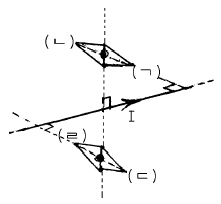
- S, N, S, N
- S, N, N, S
- N, S, N, S
- N, S, S, N
(정답률: 알수없음)
2과목: 회로이론
21. 그림에서 전류 I1과 I2는?
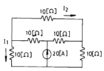
- I1=2[A], I2=0
- I1=1[A], I2=0
- I1=1[A], I2=1[A]
- I1=2[A], I2=1[A]
(정답률: 알수없음)
22. 임피던스Z(s)가
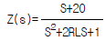
인 2단자 회로에 직류전원 20[A]를 인가 할 때 이 회로의 단자 전압은?- 20[V]
- 40[V]
- 200[V]
- 400[V]
(정답률: 알수없음)
23. 전송선로의 특성 임피던스가 50[Ω]이고, 부하저항이 150[Ω]이면 부하에서의 반사계수는?
- 0
- 0.5
- 0.3
- 1
(정답률: 알수없음)
24. 수동 4단자 회로망(또는 2단자 쌍 회로망)이 가역적이기 위한 조건이 바르지 못한 것은?(단, 다음의 그림에서 I1=Y11V1+Y12V2, -I2=Y21V1+Y22V2이고 V1과 I1에 관해서는 V1=AV2+BI2, I1=CV2+DI2이다.)
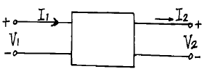
- Z12=Z21
- Y12=Y21
- AB-CD=1
- h12=-h21
(정답률: 알수없음)
25. 그림과 같은 정 K형 필터가 있다고 할 때, 이 필터는?
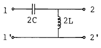
- 중역필터
- 대역필터
- 저역필터
- 고역필터
(정답률: 알수없음)
26. 대칭 4단자 회로망의 영상 임피던스는?
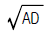
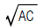
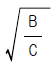
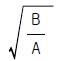
(정답률: 알수없음)
27. 1 neper는 약 몇 dB인가?
- 3.146
- 8.686
- 7.076
- 6.326
(정답률: 알수없음)
28. 라플라스 변환식 F(S)=1/(S2+2S+5)의 역 변환은?
- (1/2)e-tsin2 t
- e-tsin2t
- e-2tsin7 t
- (1/2)e-2tsin5 t
(정답률: 알수없음)
29. 다른 두 종류의 금속선으로 된 폐 회로의 두 접합점의 온도를 달리 하였을 때 열기전력이 발생하는 효과는?
- peltier 효과
- Seebeck 효과
- Pinch 효과
- Thomson 효과
(정답률: 알수없음)
30. 어떤 주파수 f에서 R과 C에 걸린 전압이 다음 그림과 같았다. 만약 주파수 f를 2배로 하면 C에 걸린 전압은?
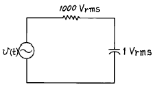
- 1.9 Vrms
- 1 Vrms
- 2 Vrms
- 0.5 Vrms
(정답률: 알수없음)
31. 단위계단함수의 라플라스 변환은?
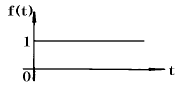
- 1
- S
- 1/S
- 1/(S-1)
(정답률: 알수없음)
32. 이상 변압기의 조건 중 옳지 않은 것은?
- 코일에 관계되는 손실이 0이다.
- 두 코일간의 결합계수가 1이다.
- 동손, 철손이 약간 있어야 한다.
- 각 코일의 인덕턴스가 ∞ 이다.
(정답률: 알수없음)
33. 그림과 같은 회로에서 테브난 등가 저항은?
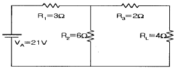
- 2Ω
- 4Ω
- 6Ω
- 8Ω
(정답률: 알수없음)
34. 다음 회로에서 전압 전달비를 구하면? (단, S=jω 이다.)
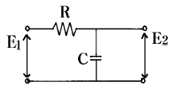
- 1/(RCS + 1)
- R/(RCS + 1)
- CS/(RCS + 1)
- RCS/(RCS + 1)
(정답률: 알수없음)
35. 4단자 회로망에 있어서 4단자 정수(또는 ABCD 파라미터) 중 정수 A와 C의 정의가 옳은 것은?
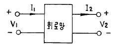
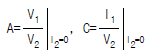
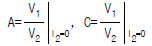
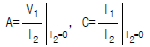
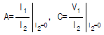
(정답률: 알수없음)
36. 그림은 이상적 변압기이다. 성립되지 않는 관계식은? (단, n1,n2는 1차 및 2차 코일의 권회수, n는
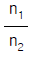
이다.)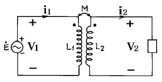
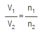
- V1i1=V2i2
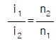
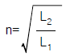
(정답률: 알수없음)
37. 그림과 같은 주기적 교류 전류의 실효치는?
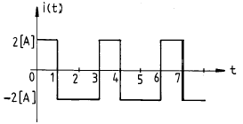
- 2[A]
- 4[A]
- 2/3[A]
- √2[A]
(정답률: 알수없음)
38. 두 회로간에 쌍대 관계가 옳지 않은 것은?
- K· V· L → K· C· L
- 테브낭 정리 → 노튼 정리
- 전압원 → 전류원
- 폐로전류 → 절점전류
(정답률: 알수없음)
39. 저항 3[Ω], 유도리액턴스 4[Ω]의 직렬회로에 60[㎐]의 정현파 전압 180[V]를 가했을때 흐르는 전류의 실효치는?
- 26[A]
- 36[A]
- 45[A]
- 60[A]
(정답률: 알수없음)
40. 시정수 T인 RL직렬회로에 t=0에서 직류전압을 가하였을때 t=4T에서의 회로 전류는 정상치의 몇 %인가? (단, 초기치는 0으로 한다.)
- 63
- 86
- 95
- 98
(정답률: 알수없음)
3과목: 전자회로
41. 불 대수의 정리 중에서 옳지 않은 것은?
- C + CㆍB = C
- Aㆍ(A + B) = A
- A + AB + AD = A
- Aㆍ(A + AB) = A + B
(정답률: 알수없음)
42. 증폭기의 고주파 특성 결정에 가장 관계가 되는 것은?
- 이득-대역폭적
- 결합 캐패시터
- 바이패스 캐패시터
- 트랜지스터의 내부 캐패시터
(정답률: 알수없음)
43. 그림과 같은 동조증폭기에서 코일의 큐를 Qc,부하만의 큐를 QL이라 할 때 이 증폭기 전체의 선택도 Q는 어떤 관계식이 되는가? (단,
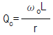
, QL=RLωoC 이며, hoe는 거의 0 이다.)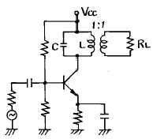
- Q = Qc + QL
- Q = Qc / QL
(정답률: 알수없음)
44. 직류 전원 공급 장치를 구성하는 회로가 아닌 것은?
- 정류기
- 필터
- 전압조정기
- 발진기
(정답률: 알수없음)
45. C급 전력 증폭기의 특징으로 옳지 못한 것은?
- 차단점 이하에서 바이어스한다.
- 전력 손실이 많아 효율이 떨어진다.
- 최대 효율은 A급 및 B급 증폭기보다 높다.
- 입력주기의 짧은 부분에서는 직선영역에서 동작한다.
(정답률: 알수없음)
46. 전계효과 트랜지스터(FET)의 소신호 모델에서 전달 컨덕턴스 gm은?
(정답률: 알수없음)
47. 그림의 회로에서 Re의 중요한 역할은?
- 동작점의 안정화
- 주파수 대역폭 증대
- 바이어스 전압감소
- 출력증대
(정답률: 알수없음)
48. 전가산기에 대한 설명 중 옳지 않은 것은?
- 입력이 가수, 피가수, 자리 올림수 등 3개가 된다.
- 합은 공식으로 (A + B)ㆍC + AㆍB로 나타난다.
- 반가산기 2개로 전가산기를 만들 수 있다.
- 합의 공식은 (A⊕B)⊕C 이다. 이 때 가수 A, 피가수 B, 자리올림수 C이다.
(정답률: 알수없음)
49. 2진 코드(1010)2를 그레이 코드(Gray Code)로 변환하면?
- 1111
- 1110
- 1010
- 1011
(정답률: 알수없음)
50. 다음 회로의 전압이득()은? (단, hie = 1.1[㏀],hfe = 60,hre = 2.5×10-4RL = 1[㏀],R1 = 5.5[㏀],R2 = 1.2[㏀],Re = 1[㏀])
- 약 -45.5
- 약 -54.5
- 약 -62.7
- 약 -40.5
(정답률: 알수없음)
51. 포토 커플러(photo coupler)란?
- 태양 전지의 일종이다.
- 빛을 전기로 변환하는 장치이다.
- 전기를 빛으로 변환하는 장치이다.
- 발광소자와 수광소자를 하나로 조합한 장치이다.
(정답률: 알수없음)
52. 궤환 발진기에서 바크하우젠(Bark hausen)의 발진 조건을 표시한 것 중 옳은 것은?
- β A = 0
- β A ＜ 1
- -β A = 1
- β A ＞1
(정답률: 알수없음)
53. 다음 회로의 이름은?
- Cascade 회로
- Darlington 회로
- Double Ended P-P
- Single Ended P-P
(정답률: 알수없음)
54. 적분 회로로 사용 가능한 회로는?
- 저역 통과 RC 회로
- 고역 통과 RC 회로
- 대역 소거 RC 회로
- 대역 통과 RC 회로
(정답률: 알수없음)
55. 변조도가 100[%]인 AM파의 전력이 30[kW]라면 반송파 성분의 전력은 몇 [kW]가 되는가?
- 20
- 30
- 40
- 50
(정답률: 알수없음)
56. 그림의 연산증폭기에서 입력 Vi= -V이면 출력 Vo는? (단, 연산증폭기는 이상적인 것이라 한다.)
- -Ve-t/RC
- Ve-t/RC
(정답률: 알수없음)
57. 전력 이득을 가장 크게 얻을 수 있는 결합 방식은?
- RC 결합
- 변성기 결합
- 임피던스 결합
- 이득이 모두 같다.
(정답률: 알수없음)
58. 다음 Karnaugh 도로 된 함수를 최소화 하면?
- AB
- AC
(정답률: 알수없음)
59. 트랜지스터의 고주파 특성으로 α 차단 주파수(fα)는 어느 것에 의하여 결정되는가?
- 컬렉터 용량에만 반비례한다.
- 컬렉터에 인가하는 전압에 비례한다.
- 베이스폭과 컬렉터 용량에 각각 비례한다.
- 베이스폭의 자승에 반비례하고 확산계수에 비례한다.
(정답률: 알수없음)
60. 수정 발진회로의 특징 중 옳은 것은?
- 효율을 높일 수 있다.
- 출력을 높일 수 있다.
- 잡음을 감소시킬 수 있다.
- 발진 주파수의 안정도가 높다.
(정답률: 알수없음)
4과목: 물리전자공학
61. 실리콘 단결정 반도체에서 N형 불순물로 사용될 수 있는 것은?
- 인듐(In)
- 갈륨(Ga)
- 인(P)
- 알루미늄(Al)
(정답률: 알수없음)
62. 어느 광전 음극의 한계 파장 λ0가 5700[A]이라 한다. 이 광전 음극의 일 함수는 약 몇 V인가?
- 0.92
- 0.46
- 2.18
- 1.09
(정답률: 알수없음)
63. α 차단 주파수가 10㎒인 트랜지스터에서 이것을 이미터 접지로 사용할 경우 β차단 주파수는 약 몇 ㎑인가? (단, α =0.98이다.)
- 100
- 150
- 204
- 408
(정답률: 알수없음)
64. 금속 표면에 빛을 조사하면 금속 내의 전자가 방출하는 현상은?
- 열전자 방출
- 냉음극 방출
- 2차전자 방출
- 광전자 방출
(정답률: 알수없음)
65. 트랜지스터의 안정도(stability factor)는?
(정답률: 알수없음)
66. 트랜지스터에서 발생하는 잡음이 아닌 것은?
- 열 잡음
- 산탄 잡음
- 플리커 잡음
- 분배 잡음
(정답률: 알수없음)
67. 트랜지스터 증폭기에서 부하 저항이 클수록 전류 이득은?
- 변함없다.
- 감소한다.
- 증가한다.
- 베이스 접지에서만 증가하고, 이미터 접지나 컬렉터 접지에서는 감소한다.
(정답률: 알수없음)
68. 2종의 금속을 접속하고 직류를 흘리면 그 접합부에 온도 차이가 생기는 효과는?
- Early 효과
- Hall 효과
- Seebeck 효과
- Peltier 효과
(정답률: 알수없음)
69. Fermi-Dirac의 분포 함수는? (단,E는 에너지준위,α ,β 는 Lagrangean multiplier 이다.)
- eα +β -1
- P=ε α +β +1
(정답률: 알수없음)
70. 전자볼트(electron volt, eV)는 전자 한 개가 1볼트의 전위차를 통과할 때 얻는 운동 에너지를 1[eV]로 정한 것이다. 1[eV]는 대략 몇 J(joule)인가?
- 9.109 × 10-31
- 1.759 × 10-11
- 1.602 × 10-19
- 6.547 × 10-34
(정답률: 알수없음)
71. n채널 전계 효과 트랜지스터(Field Effect Transister)에 흐르는 전류는 주로 어느 현상에 의한 것인가?
- 전자의 확산 현상
- 정공의 확산 현상
- 정공의 드리프트 현상
- 전자의 드리프트(drift) 현상
(정답률: 알수없음)
72. 정자계내에서 자계와 수직이 아닌 임의의 각도로 운동 하는 전자의 궤도는?
- 직선 운동
- 원 운동
- 나선 운동
- 포물선 운동
(정답률: 알수없음)
73. 전자가 광속도로 운동을 할 때, 이 전자의 질량은?
- 0이 된다.
- 무한대가 된다.
- 정지 질량과 같다.
- 정지 질량보다 감소한다.
(정답률: 알수없음)
74. n채널 J-FET와 그 특성이 비슷한 진공관은?
- 2극관
- 3극관
- 4극관
- 5극관
(정답률: 알수없음)
75. 반도체에 대한 설명 중 옳은 것은?
- P형 반도체에서 majority carrier는 정공이다.
- P형 반도체에서 첨가한 3가의 불순물을 Donor라고 한다.
- N형 반도체에서 첨가한 5가의 불순물을 Acceptor라고 한다.
- N형 반도체에서 majority carrier는 양이온과 자유 전자이다.
(정답률: 알수없음)
76. 터널 다이오드(tunnel diode)의 특징 중 옳지 않은 것은?
- 부성 저항 특성이다.
- 역바이어스 상태에서는 도체이다.
- 작은 정바이어스 상태에서 저항은 대단히 크다.
- 고속 스위칭 회로와 마이크로 웨이브 발진기에 응용 된다.
(정답률: 알수없음)
77. 확산 정수 D, 이동도 μ , 절대 온도 T 간의 관계식을 옳게 나타낸 것은?
(정답률: 알수없음)
78. 온도가 상승하면 불순물 반도체의 페르미 준위는?
- 전도대쪽으로 접근한다.
- 가전대쪽으로 접근한다.
- 금지대 중앙에 위치한다.
- 금지대 중앙으로 접근한다.
(정답률: 알수없음)
79. 300[eV]로 가속된 전자가 0.01[Wb/m2]인 균등한 자계중에 자계의 방향과 60° 의 각도를 이루며 사출되었다. 전자가 그리는 궤도의 직경은? (단, 전자의 전하 e = 1.602×10-19[coul], 전자의 질량 m = 9.106×10-31[㎏]이다.)
- 약 2.02×10-2[m]
- 약 1.01×10-2[m]
- 약 2.02×10-4[m]
- 약 1.01×10-4[m]
(정답률: 알수없음)
80. Ge의 진성 캐리어 밀도는 상온에서 Si보다 높다. 그 이유의 설명으로 가장 옳은 것은?
- Ge의 에너지갭이 Si의 에너지갭보다 좁기 때문에
- Si의 에너지갭이 Ge의 에너지갭보다 좁기 때문에
- Ge의 캐리어 이동도가 Si보다 크기 때문에
- Ge의 캐리어 이동도가 Si보다 작기 때문에
(정답률: 알수없음)
5과목: 전자계산기일반
81. 순차 접근(Sequential Access) 방식을 사용하는 장치는?
- 반도체 메모리
- 자기드럼
- 자기테이프
- 자기디스크
(정답률: 알수없음)
82. 연산 결과를 일시적으로 기억하고 있는 레지스터는?
- 누산기(accumulator)
- 기억 레지스터(storage register)
- 메모리 레지스터(memory register)
- 인스트럭션 카운터(instruction counter)
(정답률: 알수없음)
83. 중앙처리장치에서 하는 일이 아닌 것은?
- 산술 연산을 한다.
- 센서(sensor) 신호의 변환을 담당한다.
- 명령 레지스터에 기억된 명령을 해독한다.
- 명령 처리 순서를 결정하는 각종 제어 신호를 만들어 낸다.
(정답률: 알수없음)
84. 다음의 코드 시스템 중에서 성질이 다른, 즉 오류 수정 기능이 있는 것은?
- Gray 코드
- 한글 완성형 코드
- parity 코드
- Hamming 코드
(정답률: 알수없음)
85. 서브 루틴을 호출할 때 복귀 주소(return address)를 기억하는데 주로 사용하는 것은?
- 플래그
- 프로그램 카운터
- 스택
- ALU
(정답률: 알수없음)
86. 컴퓨터 주기억장치의 용량을 1M 바이트의 크기로 구성하려고 한다.1바이트가 8비트이고 패리티 비트를 포함한다면 64Kbit DRAM 칩이 몇 개가 필요한가?
- 16
- 17
- 128
- 144
(정답률: 알수없음)
87. 인터럽트(interrupt)의 발생 원인으로 옳지 않은 것은?
- 부 프로그램 호출
- 오퍼레이터에 의한 동작
- 불법적인 인스트럭션(instruction)의 수행
- 정전 또는 자료 전달 과정에서 오류의 발생
(정답률: 알수없음)
88. 10진법 11을 16진법으로 표현하면?
- 11
- A
- B
- C
(정답률: 알수없음)
89. 마이크로컴퓨터 시스템 구성에 관련된 내용으로 옳지 않은 것은?
- CPU의 실행 속도는 메모리 액세스(access)시간과 무관하다.
- 데이터의 전송 선로인 데이터 버스는 쌍방향이다.
- 인터럽트는 소프트웨어적으로 발생시킬 수 있다.
- DMA는 데이터의 고속 전송을 담당한다.
(정답률: 알수없음)
90. 완충 기억기구(Buffer Storage)의 설명 중 옳지 않은 것은?
- 내부 처리 속도를 올리기 위한 기구이다.
- 모든 기종에 따라 완충기억기구는 동일한 모델이다.
- 완충기억기구는 시스템의 성능을 대폭 향상시켜준다.
- 주기억장치와 CPU 사이의 동작속도 불균형을 보완하는 기구이다.
(정답률: 알수없음)
91. 시프트 레지스터에서 가장 시간이 적게 걸리는 입ㆍ출력 방식은?
- 직렬입력-직렬출력
- 직렬입력-병렬출력
- 병렬입력-직렬출력
- 병렬입력-병렬출력
(정답률: 알수없음)
92. 운영체제의 구성 요소와 거리가 가장 먼 것은?
- 파일 관리(File Management)
- 작업 관리(Job Management)
- 작업 계획(Job Scheduler)
- 라이브러리(Library)
(정답률: 알수없음)
93. 메모리 장치와 주변 장치 사이에서 데이터의 입ㆍ출력 전송이 직접 이루어지는 것은?
- MIMD
- UART
- MIPS
- DMA
(정답률: 알수없음)
94. n개의 비트(bit)로 정수를 표시할 때 2의 보수 표현법에 의한 범위를 적절히 나타낸 것은?
- -2n ∼ 2n-1
- -2n-1 ∼ 2n-1
- -2n-1 ∼ (2n-1-1)
- -(2n-1-1) ∼ (2n-1-1)
(정답률: 알수없음)
95. 중앙처리장치가 수행하는 명령어들을 기능별 네가지로 분류하였을 때 속하지 않는 것은?
- 함수연산기능
- 전달기능
- 기억기능
- 입ㆍ출력기능
(정답률: 알수없음)
96. 스택 구조의 컴퓨터에 사용되는 명령어 방식은?
- 0-주소 명령어 방식
- 1-주소 명령어 방식
- 3-주소 명령어 방식
- 인덱스드 주소 모드 방식
(정답률: 알수없음)
97. 프로그램 카운터가 명령어의 번지와 더해져서 유효번지를 결정하는 어드레싱 모드는?
- 레지스터 모드
- 간접번지 모드
- 상대번지 모드
- 인덱스 어드레싱 모드
(정답률: 알수없음)
98. 순서도를 작성하는 일반 규칙으로 옳지 않은 것은?
- 한국산업규격의 표준 기호를 사용한다.
- 제어 흐름에 따라 위에서 아래로, 왼쪽에서 오른쪽으로 그린다.
- 기호 내부에 처리내용을 자세하게 기술하고, 주석은 기술하지 않도록 한다.
- 문제가 복잡하고 어려울 때는 블록 별로 나누어 단계적으로 그린다.
(정답률: 알수없음)
99. 어셈블리 언어로 프로그램을 작성할 때 절대 번지 대신에 간단한 기호명칭을 사용할 수 있는데 이러한 번지를 무엇이라 하는가?
- self address
- symbolic address
- relative address
- symbolic relative address
(정답률: 알수없음)
100. CPU는 4개의 사이클 반복으로 동작을 행한다. 이 중 4개의 사이클에 속하지 않는 것은?
- Fetch cycle
- Execute cycle
- Interrupt cycle
- Branch cycle
(정답률: 알수없음)